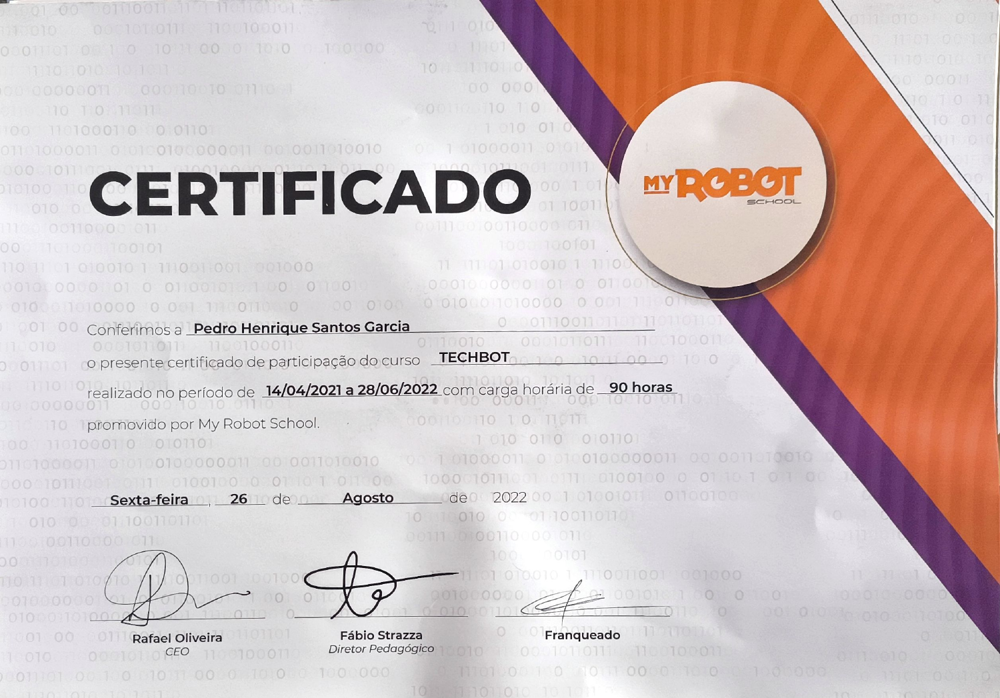

PARTICIPAÇÃO
TechBot — Robótica
My Robot School
90 horas · 14/04/2021 a 28/06/2022
Certificado de participação. Montagem, eletrônica, automação e lógica de programação.
Consultar certificado · PDF ↗